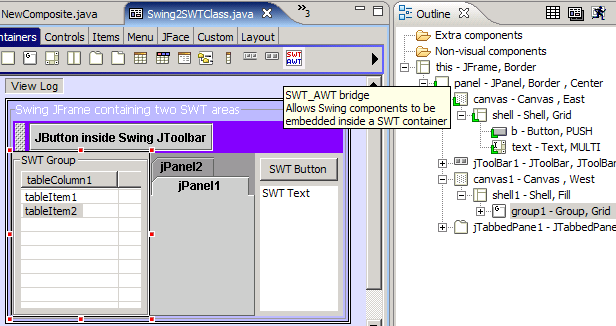
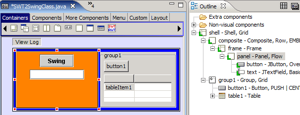
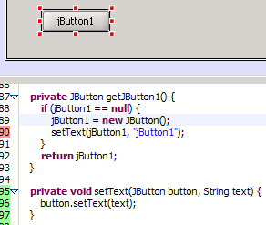
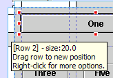
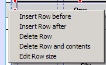
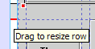
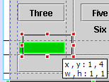
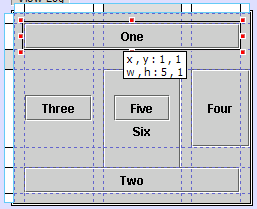
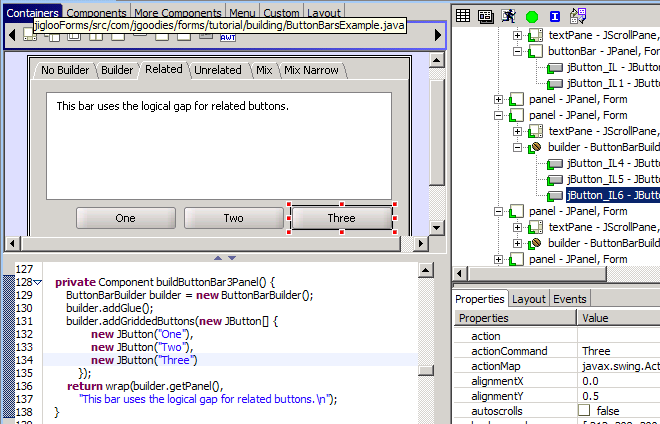
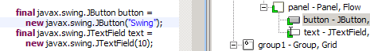

SWT_AWT support (1)
Embedding SWT inside Swing
|
SWT
controls can now be embedded in Swing components by choosing the new
"SWT_AWT" icon in the component palette. In the example below, two
separate SWT areas (in the code, a SWT Shell is created inside an AWT
Canvas) have been added to a Swing JFrame. In the image, one of the SWT
controls (an SWT Group) is selected in the GUI editor, and you can see
the mixing of Swing and SWT components in the Outline view.
Palette switching: When a
SWT control is selected in the GUI editor, the component palette will
switch from Swing to SWT, allowing other SWT controls to be added to
the embedded SWT control. In the image below, you can see that the SWT
component palette is being displayed since a SWT control is selected.
When a Swing component is selected, the palette will switch back to
Swing.
 |
SWT_AWT support (2)
Embedding Swing inside SWT |
Similarly, Swing components can be embedded in SWT controls (using SWT_AWT)
. When
a Swing component is selected in the GUI editor, the component palette will
switch from SWT to Swing, allowing other Swing components to be added to
the embedded Swing component.

|
| Parsing enhancements |
Parsing has been considerably enhanced
- eg, calls to methods which have GUI components as arguments like, setText(jButton1, "jButton1") are now understood.

|
Graphical layout editors improved
|
Visual
editing of GridBag and JGoodies Form layouts (and also the newly-added TableLayout) has been greatly improved.
Bars appear at the edges of a component using GridBag, Table or Form layouts,
allowing columns/rows to be added, deleted, moved or edited.
  
Visual feedback on moving components has also been improved.

|
Table Layout supported
|
Clearthought's
TableLayout is now supported - graphical editing is very similar to the
editing for GridBag and JGoodies Form layouts.

|
JGoodies FormLayout support enhanced.
|
JGoodies
Builders are now supported (in that Builder code is now
parsed and rendered correctly, and builder-generated components are
recognized as individual components - Jigloo does not yet have an
automated way to add
Builders).

|
Tabbed pane editor format enhanced
|
The
tabbed layout for Jigloo (separate tabs for source and GUI) has
significant useability enhancements. Eg, if tabbed layout is selected,
then when the editor appears initially the code is not parsed until the "GUI editor" tab is selected. |
View-log button
|
"View
Log" button in form editor allows user to view the parsing log
generated by Jigloo for help in diagnosing rendering problems.
Generation
of Look&Feel code (static call to UIManager.setLookAndFeel) can be
turned off by an option in the preferences page, allowing look and feel
to be tested out in Jigloo without changing the code, and set at
runtime using the swing.properties file. |
More widgets
supported
|
Browser,
CBanner, Link and TreeColumn now appear in the component palette.
However, the 3.1 controls (CBanner, Link and TreeColumn) will only
appear when running Eclipse 3.1.
|
Eclipse 3.1 supported
|
Works
with Eclipse 3.1. There is no 3.1-specific added functionality,
but the new 3.1 SWT controls will appear in the component palette.
|
Added preferences, and quick access to preferences
|
Generation
of "Set Look & Feel" code can now be chosen to *not* be generated
(using an added option in the Jigloo references page) when changing the Look & Feel in the GUI editor, allowing Look
& Feel to be set at run-time using the Swing properties.
Parsing of constructors and main method before GUI initialization methods can be turned off (an added option in the Jigloo references page) .
Also, for quick access to the Jigloo preferences page, Ctrl+Alt+J will open up the Eclipse preference dialog, open at the Jigloo page.
|
Toggling local fields
|
GUI
components defined as local fields can now be re-defined as instance
variables, and vice-versa, using a new option in the "Source..."
context menu called "Toggle local field definition". Local and inline fields are
denoted in the Outline view by a green "L" icon decorator in the bottom
left of a component's icon.

|
Cursor property supported
|
SWT
and Swing cursors can now be edited in the GUI property editor.
(selecting from the pre-defined types - custom cursors are not
supported). The SWT cursors use the SWTResourceManager, which has now
been updated. Deleting any existing SWTResourceManager classes will
force Jigloo to generate a new (updated) SWTResourceManager.
|
|